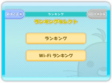
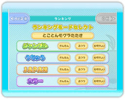
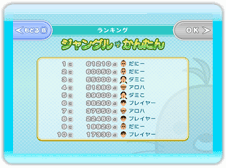
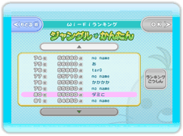
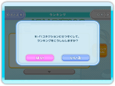

● ランキングセレクト
見たいランキングを選びます。
・ ランキング
本体内のランキングを表示します。
・ Wi-Fiランキング
ニンテンドーWi-Fiコネクションに接続して、全国のプレイヤーのランキングを表示します。

● ランキングモードセレクト画面
ランキングが見たいモード、ステージ、レベルを選びます。

● ランキング画面
・ ランキング
トップ10までの得点を見ることができます。自分の得点は色つきで表示されます。

・ Wi-Fiランキング
トップ30までと自分に近い得点のランキングを見ることができます。「▲」「▼」ボタンを押すと上下にスクロールします。

・ ランキング更新
（Wi-Fiランキングのみ）
「ランキングこうしん」を選び、「はい」を選ぶと、Wi-Fiコネクションに接続し、ランキングデータの更新を行います。未登録の得点がある場合は、得点情報の送信も行います。
「いいえ」を選ぶと、ランキングデータの更新は行われません。